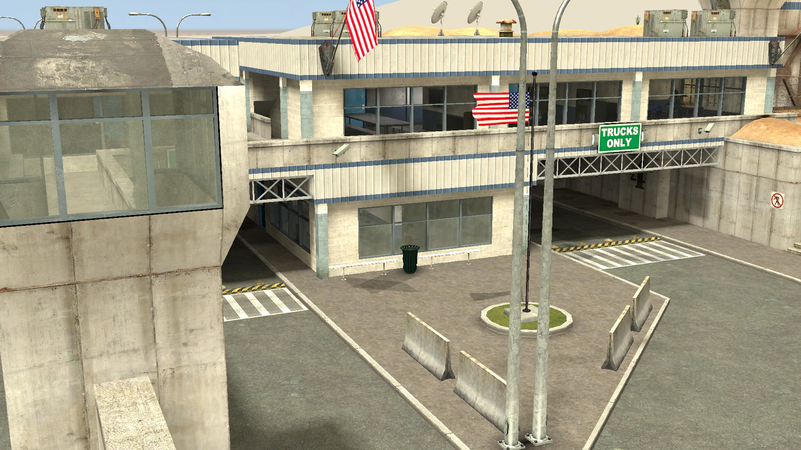

The Black Mesa Research Facility, located deep within the New Mexico desert, is a world-class research complex built within a decommissioned missile silo installation.
Officially recognized as an Air Force base, the facility conducts extensive scientific programs ranging from pure research to applied technologies.
Additionally, Black Mesa contributes to future space science through HEV suit development, rocket and satellite launch testing, and the repurposing of retired ICBM launch facilities.
Access to Black Mesa is strictly limited and permitted only through designated checkpoints.
The United States Marine Corps and DOE Security Forces ensure the safety of the facility.
The facility is engaged in a broad spectrum of scientific and technological projects, including:
The Black Mesa Research Facility (BMRF) was founded in 1955 by the Black Mesa Corporation. Built on a model of public–private partnership, it has since pursued extensive scientific and engineering programs. Following expansion in the 1960s, Black Mesa broadened its infrastructure and collaboration, evolving into an integrated complex supporting advanced research, engineering, manufacturing, operations, and security.
The founding administrator of Black Mesa, credited with establishing the foundation of the facility. Retired in 1966 citing health concerns.
Recognized as one of the most accomplished administrators in Black Mesa history. Retired under normal circumstances.

Exercising strong diplomatic ability, Dr. Breen has overseen significant growth and continues to serve as Administrator.
Transit Authority — Chief: Michael “Mike” Daugherty
Aviation Authority — Chief: Karen Alvarez
General Security
Special Security Force (SSF) — Commander: Colin Mercer
Scientific Teams
Engineering & Manufacturing Division — Director: Eng. Marcus Levington
Hospitality & Catering — Chief: Helen Ward
Waste Disposal — Chief: Frank Kowalski
Maintenance & Inspections — Chief: George Ramirez
IT & Network — Chief: Samuel Cho
Logistics & Transportation — Chief: David Harlow
Aviation Ops — Chief: Col. Richard Halpern
Reactor Ops — Chief: Dr. Elias Brandt
Medical Division — Chief: Dr. Linda Voss
Fire & Rescue — Chief: Thomas Delgado
Tactical Operations Unit (FRTOU) — Commander: Capt. Alan Rourke
DOE Security Force — External Personnel